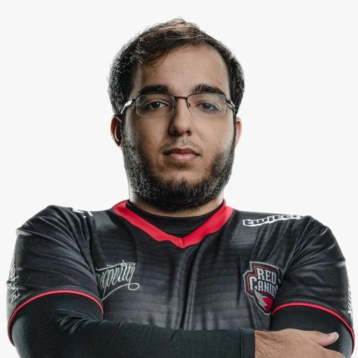
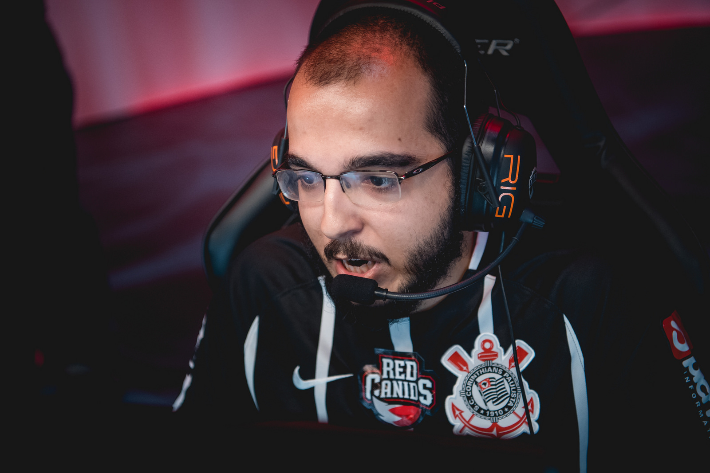

A trajetória de Gustavo “Sacy” Rossi no League of Legends (LoL) está profundamente ligada à organização RED Canids, onde ele viveu os momentos mais marcantes de sua primeira fase como jogador profissional. Sacy iniciou sua carreira no LoL em 2013, passando por equipes menores até ingressar na INTZ Red em março de 2015 . Em dezembro daquele mesmo ano, a organização passou por um rebranding e foi renomeada para RED Canids, equipe que Sacy defenderia por cerca de cinco anos até o fim de sua jornada no MOBA da Riot Games
O ápice dessa parceria ocorreu em 2017, durante o primeiro split do Campeonato Brasileiro de League of Legends (CBLoL). Naquela temporada, a "Matilha" montou um elenco extremamente forte que contava com nomes como brTT, Tockers e Robo . Na grande final disputada em Recife contra a Keyd Stars, a RED Canids utilizou uma estratégia de revezamento de jogadores; Sacy entrou no segundo jogo substituindo brTT e participou da vitória dominante por 3 a 0 . Com esse título, a equipe representou o Brasil no Mid-Season Invitational (MSI) 2017, onde alcançaram a 8ª posição mundial .

